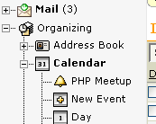

IMP 1.0.0 also somehow contained hardcoded links to my old .ml.org dynamic domain, an empty faq.shtml (all of the HTML that wasn't embedded into PHP code was in .shtml files), and a src/ directory with .phps symlinks to all of the PHP files.
Back then (this was 1998), releasing something new and unknown on Freshmeat meant some people actually noticed it - there weren't nearly as many posts as there are now.
The line count obviously isn't a measure of quality, but the 53-fold increase is impressive to me from a "what have I done?" standpoint. Also it doesn't count templates, CSS, docs, etc.
Just looking at this slide title you can understand where "i18n" came from. It's not some standard with the number 18 - it's "i", followed by 18 other letters, followed by by "n". Same for l10n - localization has 10 letters between "l" and "n".
If you're reading this online after the talk, it'd be awfully nice of me to put up some actual screenshots for you. I'll try and do that at some point.
This time you're in luck - just browse around http://cvs.horde.org/ and http://dev.horde.org/ for plenty of code and API docs.
Okay. Here are the basic things an application gets from Horde:
Typically Horde applications share a common structure and code organization. The skeleton application provides this for you. But all you really need is:
horde/config/registry.phpTechnically, yes. But to take full advantage of Horde, you'll want:
horde/config/registry.phpHere's an application's registry.php entry:
$this->applications['whups'] = array(
'fileroot' => dirname(__FILE__) . '/../whups',
'webroot' => $this->applications['horde']['webroot'] . '/whups',
'name' => _("Tickets"),
'status' => 'active',
'provides' => 'tickets',
'menu_parent' => 'devel',
); 'fileroot' => dirname(__FILE__) . '/../whups',
The fileroot setting tells Horde where the application
- in this case Whups - lives on the filesystem. The
__FILE__ constant is the current file;
dirname() strips off the filename and turns it into just
a directory.
'webroot' => $this->applications['horde']['webroot'] . '/whups',
The webroot setting tells Horde where the application
lives relative to the webserver's document root. Usually this is
predictable as well, but you might want to give an application its own
domain - for example, http://cvs.php.net/, which is powered
by Horde and Chora.
'name' => _("Tickets"),
The name setting surprisingly sets the human-readable
name of the application. The _() is an alias for
gettext(), which translates the name into other
languages.
'status' => 'active',
The status setting tells Horde what kind of
application this is. Possible statuses are:
'provides' => 'tickets',
The provides setting tells Horde if the application
provides any APIs. In this case Whups provides the tickets API, which
allows for adding and listing tickets. In turn, Horde knows that if it
gets a request for a tickets/search method, it should
pass it along to Whups.
'menu_parent' => 'devel',
The menu_parent setting is just for the sidebar - it
tells Horde what item to make the application of a child of. This lets
you customize the menu to your heart's content. This can be left out
or set to null for top-level items.
Okay. Let's add calendar alarms to the sidebar menu. Here's the plan:
Horde Blocks are very easy to write. Just give them a name, a type, and fill in a few functions.
For tree blocks, which add things to Horde_Tree objects, all we need is a _buildTree() function
function _buildTree(&$tree, $indent = 0, $parent = null)
{
...
Here's the full code:
<?php
$block_name = _("Menu Alarms");
$block_type = 'tree';
/**
* @package Horde_Block
*/
class Horde_Block_kronolith_tree_alarms extends Horde_Block {
var $_app = 'kronolith';
function _buildTree(&$tree, $indent = 0, $parent = null)
{
@define('KRONOLITH_BASE', dirname(__FILE__) . '/../..');
require_once KRONOLITH_BASE . '/lib/base.php';
$alarmCount = 0;
$alarms = Kronolith::listAlarms(new Horde_Date(time()), $GLOBALS['display_calendars']);
foreach ($alarms as $calId => $calAlarms) {
$GLOBALS['kronolith']->open($calId);
foreach ($calAlarms as $eventId) {
$event = &$GLOBALS['kronolith']->getEvent($eventId);
if ($event->hasException(date('Y'), date('n'), date('j'))) {
continue;
}
$alarmCount++;
$url = Util::addParameter(Horde::applicationUrl('viewevent.php'),
array('eventID' => $eventId,
'calendar' => $calId));
$tree->addNode($parent . $calId . $eventId,
$parent,
$event->getTitle(),
$indent + 1,
false,
array('icon' => 'alarm.png',
'icondir' => $GLOBALS['registry']->getImageDir(),
'url' => $url));
}
}
if ($registry->get('url', $parent)) {
$purl = $registry->get('url', $parent);
} elseif ($registry->get('status', $parent) == 'heading' ||
!$registry->get('webroot')) {
$purl = null;
} else {
$purl = Horde::url($registry->getInitialPage($parent));
}
$pnode_params = array('url' => $purl,
'icon' => $registry->get('icon', $parent),
'icondir' => '');
if ($alarmCount) {
$tree->addNode($parent, $registry->get('menu_parent', $parent),
'' . $registry->get('name', $parent) . '',
$indent, false, $pnode_params);
} else {
$tree->addNode($parent, $registry->get('menu_parent', $parent),
$registry->get('name', $parent), $indent, false, $pnode_params);
}
}
}
Tree blocks are easy to add into (or take out of) registry.php:
$this->applications['kronolith-alarms'] = array(
'status' => 'block',
'app' => 'kronolith',
'blockname' => 'tree_alarms',
'menu_parent' => 'kronolith',
);

A random plug for S5 by Eric Meyer, the slide show "system" I used for this talk. It's just XHTML, CSS, and Javascript. Incredibly slick.